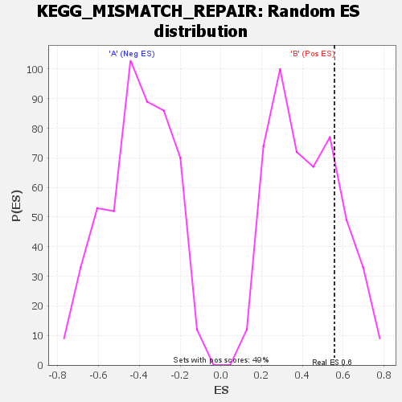

| | | Dataset | my.my.cls#B_versus_A.my.cls#B_versus_A_repos |
| Phenotype | my.cls#B_versus_A_repos |
| Upregulated in class | B |
| GeneSet | KEGG_MISMATCH_REPAIR |
| Enrichment Score (ES) | 0.5568865 |
| Normalized Enrichment Score (NES) | 1.3437958 |
| Nominal p-value | 0.20486815 |
| FDR q-value | 0.46960866 |
| FWER p-Value | 0.904 |
Table: GSEA Results Summary
 Fig 1: Enrichment plot: KEGG_MISMATCH_REPAIR
Fig 1: Enrichment plot: KEGG_MISMATCH_REPAIR
Profile of the Running ES Score & Positions of GeneSet Members on the Rank Ordered List
| SYMBOL | TITLE | RANK IN GENE LIST | RANK METRIC SCORE | RUNNING ES | CORE ENRICHMENT | | 1 | RFC3 | na | 2111 | 0.110 | 0.0524 | Yes |
| 2 | MLH1 | na | 2970 | 0.101 | 0.1195 | Yes |
| 3 | RFC4 | na | 4330 | 0.090 | 0.1688 | Yes |
| 4 | PMS2 | na | 4613 | 0.088 | 0.2357 | Yes |
| 5 | PCNA | na | 5277 | 0.084 | 0.2924 | Yes |
| 6 | RFC2 | na | 5988 | 0.080 | 0.3451 | Yes |
| 7 | MSH6 | na | 7278 | 0.073 | 0.3822 | Yes |
| 8 | RPA2 | na | 8146 | 0.070 | 0.4236 | Yes |
| 9 | RFC5 | na | 8489 | 0.068 | 0.4731 | Yes |
| 10 | POLD4 | na | 10750 | 0.059 | 0.4811 | Yes |
| 11 | EXO1 | na | 10778 | 0.059 | 0.5286 | Yes |
| 12 | RFC1 | na | 13311 | 0.050 | 0.5243 | Yes |
| 13 | RPA3 | na | 13691 | 0.048 | 0.5569 | Yes |
| 14 | RPA4 | na | 22384 | 0.023 | 0.4222 | No |
| 15 | SSBP1 | na | 25172 | 0.016 | 0.3861 | No |
| 16 | LIG1 | na | 29127 | 0.006 | 0.3213 | No |
| 17 | RPA1 | na | 31811 | -0.000 | 0.2742 | No |
| 18 | POLD1 | na | 34317 | -0.007 | 0.2352 | No |
| 19 | MSH2 | na | 34594 | -0.007 | 0.2362 | No |
| 20 | MSH3 | na | 39642 | -0.020 | 0.1637 | No |
| 21 | MLH3 | na | 48267 | -0.048 | 0.0503 | No |
| 22 | POLD2 | na | 50382 | -0.057 | 0.0594 | No |
| 23 | POLD3 | na | 51343 | -0.062 | 0.0933 | No |
Table: GSEA details [plain text format]
Fig 2: KEGG_MISMATCH_REPAIR
Blue-Pink O' Gram in the Space of the Analyzed GeneSet

Fig 3: KEGG_MISMATCH_REPAIR: Random ES distribution
Gene set null distribution of ES for KEGG_MISMATCH_REPAIR